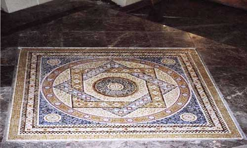

A 2×2 m square in the arch between the central part of the church and the refectory
Mosaic floors in the Church of the Saviour Not Made by Hands (the church is on the grounds of the residence of the President of the Russian Federation), Usovo, Moscow Region, 2004
Total area: 36 sq. m
Technique: direct method
Material: smalti, Bisazza
Author of the designs, lead artist in the team
Photography and filming are prohibited at the residence, so unfortunately only a few photographs exist, taken by an accredited photographer during a visit by President V. V. Putin.
Total area: 36 sq. m
Technique: direct method
Material: smalti, Bisazza
Author of the designs, lead artist in the team
Photography and filming are prohibited at the residence, so unfortunately only a few photographs exist, taken by an accredited photographer during a visit by President V. V. Putin.